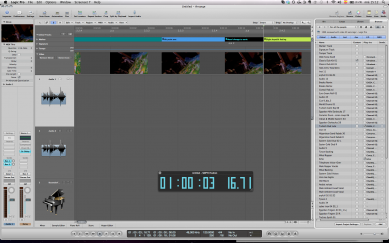
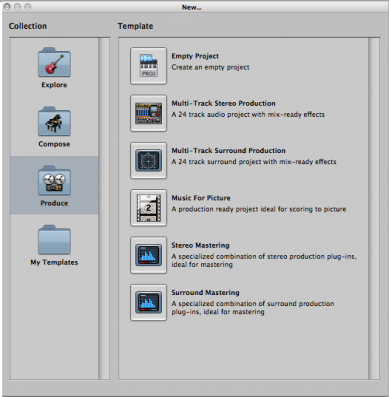
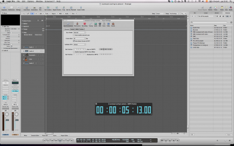
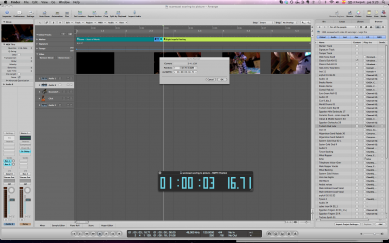
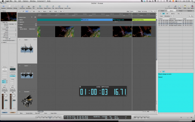
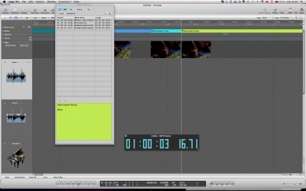

<?xml version="1.0" encoding="UTF-8"?><rss version="2.0"
	xmlns:content="http://purl.org/rss/1.0/modules/content/"
	xmlns:wfw="http://wellformedweb.org/CommentAPI/"
	xmlns:dc="http://purl.org/dc/elements/1.1/"
	xmlns:atom="http://www.w3.org/2005/Atom"
	xmlns:sy="http://purl.org/rss/1.0/modules/syndication/"
	xmlns:slash="http://purl.org/rss/1.0/modules/slash/"
	xmlns:itunes="http://www.itunes.com/dtds/podcast-1.0.dtd"
xmlns:rawvoice="http://www.rawvoice.com/rawvoiceRssModule/"
xmlns:googleplay="http://www.google.com/schemas/play-podcasts/1.0"

xmlns:georss="http://www.georss.org/georss" xmlns:geo="http://www.w3.org/2003/01/geo/wgs84_pos#"
>

<channel>
	<title>Yaiza Varona &#8211; SCOREcastOnline.com</title>
	<atom:link href="." rel="self" type="application/rss+xml" />
	<link>http://www.scorecastonline.com</link>
	<description>Global Community for the Professional Media Composer</description>
	<lastBuildDate>
	Sun, 07 Apr 2019 10:06:34 +0000	</lastBuildDate>
	<language>en-US</language>
	<sy:updatePeriod>
	hourly	</sy:updatePeriod>
	<sy:updateFrequency>
	1	</sy:updateFrequency>
	<generator>https://wordpress.org/?v=5.1.1</generator>
<!-- podcast_generator="Blubrry PowerPress/7.4" mode="advanced" feedslug="feed" Blubrry PowerPress Podcasting plugin for WordPress (https://www.blubrry.com/powerpress/) -->
	<itunes:summary>Global Community for the Professional Media Composer</itunes:summary>
	<itunes:author>Yaiza Varona &#8211; SCOREcastOnline.com</itunes:author>
	<itunes:image href="../../../wp-content/plugins/powerpress/itunes_default.jpg" />
	<itunes:subtitle>Global Community for the Professional Media Composer</itunes:subtitle>
	<image>
		<title>Yaiza Varona &#8211; SCOREcastOnline.com</title>
		<url>../../../wp-content/uploads/powerpress/sig-SCO.jpg</url>
		<link>http://www.scorecastonline.com</link>
	</image>
<site xmlns="com-wordpress:feed-additions:1">29563098</site>	<item>
		<title>Scoring to picture in Logic 9 (part 2)</title>
		<link>../../../2013/02/21/scoring-to-picture-in-logic-9-part-2/</link>
				<comments>../../../2013/02/21/scoring-to-picture-in-logic-9-part-2/#comments</comments>
				<pubDate>Thu, 21 Feb 2013 14:37:37 +0000</pubDate>
		<dc:creator><![CDATA[Yaiza Varona]]></dc:creator>
				<category><![CDATA[Latest Resources]]></category>
		<category><![CDATA[SCOREcast University]]></category>
		<category><![CDATA[Sequencing & Mockups]]></category>

		<guid isPermaLink="false">../../../?p=1981</guid>
				<description><![CDATA[In this second part of the "Scoring with Logic Pro" article series, Yaiza Varona talks about a few more features of Logic that can really make your life easier!]]></description>
								<content:encoded><![CDATA[<p><em>Hello everyone and welcome back! In this second article  I would like</em><em> to talk about some more ways in which Logic can make your life easier when scoring for video such as importing ideas from other project files and using stems.</em></p>
<p>&nbsp;</p>
<p><!--
@page { margin: 2cm }
P { margin-bottom: 0.21cm }
--><em>Let&#8217;s assume tha</em><em>t the </em><i>director has given me some extra notes about my cue</i><em>&#8230;happens to all of us, right?</em></p>
<p>&nbsp;</p>
<p>Well it might come handy as well copy paste them in <b>Notes</b> inside Logic (whose quick access you can find in the Toolbar, upper corner right). This feature isn´t exclusive of the Picture template, but it is especially helpful when you want to have quick access to your spotting notes, director´s remarks, latest stroke of inspiration&#8230;</p>
<p>&nbsp;</p>
<p><i>I wish I could use some instruments and themes from the previous scene I scored</i></p>
<p>&nbsp;</p>
<p>Wish granted. One of the most useful features in Logic is <b>Import</b> in the <b>Browser</b> of Media (ta-da!)</p>
<p>From it you can import any input/output source, plugin, project settings, content of track etc from any previous project into your current one. This allows you to:</p>
<p>&nbsp;</p>
<ul>
<li>Import that theme or motif that you used two cues ago. No need to copy-paste!</li>
<li>Import those strings that you liked so much in that old project from two years ago that would go so nicely in this precise cue</li>
<li>Build subtemplates of you choice (winds, strings, brass, funky synths, ethic percussion), including plugins (those lush strings with that precise reverb) that you´ll be able to coordinate flexibly as if you were working with modules</li>
</ul>
<p><a href="../../../2013/02/21/scoring-to-picture-in-logic-9-part-2/browser-2" rel="attachment wp-att-1983"></a></p>
<p>&nbsp;</p>
<p><i>Stems, stems, stems&#8230;</i></p>
<p>&nbsp;</p>
<p>The stems and submixes that are often required when scoring to picture can be obtained by different procedures. Here we will see the one that should be faster!</p>
<p>It basically consists in assigning whatever channels of similar material you have to a particular bus, that you will later use as an independent track on its own.</p>
<p>Let´s say something in the line: tracks 1-7 go to bus 1 called Strings, 8-9 to bus 2 called Bass, 10 to 17 to bus 3 called Drums&#8230;you name it. By doing so you are creating some aux channels in the mixer devoted to stem groups. Now, to record those stems, we shall use the outputs of each of those submixes as input sources of new tracks in the arrange.<br />
So, in the Arrange we create new audio tracks using the buses as input (as many as buses we created and we choose the first and go ascending). Now, if we click Record for the whole length of the track, these new tracks shall contain the stems.</p>
<p><em>That&#8217;s all ladies and gentlemen! Logic is a very powerful program and we have only touched upon very basic concepts but hopefully you have found something in here that can help you get started.</em></p>
<p><em>Remember, if you have any tips about scoring in Logic Pro, why not share them below at the comments section??? </em></p>
<p>&nbsp;</p>
 <!-- WP Biographia v3.3.2 -->
<div class="wp-biographia-container-top" style="background-color: #eadcdc; border-top: 4px solid #000000;"><div class="wp-biographia-pic" style="height:100px; width:100px;"></div><div class="wp-biographia-text"><h3><a href=".." title="Yaiza Varona">Yaiza Varona</a></h3><p>Yaiza Varona is a composer for media, musicologist and Logic 9 Master Pro. Born in Barcelone in 1978, she is currently based in London. She has a Degree in Musicology from Granada University, studying Ancient Music and Music Critics specialization subjects, and a Certificate in Media Composition. Yaiza is a Logic 9 Master Pro certified by Apple, and also instructs and consults on the software both in person and online.</p><div class="wp-biographia-links"><small><ul class="wp-biographia-list wp-biographia-list-icon"><li><a href="http://www.yaizavarona.com" target="_blank" title="Yaiza Varona On The Web" class="wp-biographia-link-icon"></a></li><li><a href="yaizavarona" target="_blank" title="Yaiza Varona On Twitter" class="wp-biographia-link-icon"></a></li><li><a href="https://www.facebook.com/yaiza.varona.composer" target="_blank" title="Yaiza Varona On Facebook" class="wp-biographia-link-icon"></a></li><li><a href=".." target="_blank" title="More Posts By Yaiza Varona" class="wp-biographia-link-icon"></a></li></ul></small></div></div></div><!-- WP Biographia v3.3.2 -->
]]></content:encoded>
							<wfw:commentRss>../../../2013/02/21/scoring-to-picture-in-logic-9-part-2/feed/</wfw:commentRss>
		<slash:comments>16</slash:comments>
						<post-id xmlns="com-wordpress:feed-additions:1">1981</post-id>	</item>
		<item>
		<title>Scoring to picture in Logic 9 (part 1)</title>
		<link>../../../2013/01/17/scoring-to-picture-in-logic-9-part-1/</link>
				<comments>../../../2013/01/17/scoring-to-picture-in-logic-9-part-1/#comments</comments>
				<pubDate>Thu, 17 Jan 2013 13:30:58 +0000</pubDate>
		<dc:creator><![CDATA[Yaiza Varona]]></dc:creator>
				<category><![CDATA[Latest Resources]]></category>
		<category><![CDATA[SCOREcast University]]></category>
		<category><![CDATA[Sequencing & Mockups]]></category>

		<guid isPermaLink="false">../../../?p=1961</guid>
				<description><![CDATA[Yaiza Varona guides you through the procedure of setting up Logic to score a movie, importing the movie and properly syncing it to your project. ]]></description>
								<content:encoded><![CDATA[<p><!--
@page { margin: 2cm }
P { margin-bottom: 0.21cm }
-->Scoring to picture with Logic</p>
<p>&nbsp;</p>
<p>When scoring to picture, Logic has a template dedicated especifically for this that can come in quite handy (therefore we´ll asume we´re using it already). Additionally, you can customize it yourself as seen in previous articles and speed up even more your scoring to picture!</p>
<p><a href="../../../2013/01/17/scoring-to-picture-in-logic-9-part-1/picture-template" rel="attachment wp-att-1976"></a></p>
<p><i>So I have a movie and I want to score it</i></p>
<p>&nbsp;</p>
<p>First thing obviously will be to import the movie into Logic, and then set up the synchronization with it. In the Global Tracks you can find a dedicated track for the movie where you can import it and see it on the Video Track or you can also import it from <b>File / Open Movie</b>.</p>
<p>For setting up the synchronisation, you can adjust the settings in <b>Project Settings / Synchronisation</b> (frame rate and bar position in reference to SMTPE) and <b>Project Settings / Video</b> (Movie Start field).</p>
<p><a href="../../../2013/01/17/scoring-to-picture-in-logic-9-part-1/synchronisation" rel="attachment wp-att-1977"></a></p>
<p>It´s always prudent to double check these parameters are well adjusted by checking the burnt in SMPTE code of your clip coincides all along the project with the SMPTE display in Logic (in the transport bar, you can even find an independen giant display)</p>
<p>&nbsp;</p>
<p><i>Now my movie plays smoothly in Logic- how to start scoring?</i></p>
<p>&nbsp;</p>
<p>Once you have those specifications clear the next step is to display in Logic that mental map that you have of how you want to score your scene. How?</p>
<p>One of the major characteristics of writing music to picture is that the structure of the cue shall be shaped by the events in the clip instead of being bar / musical divisions based. This is what will make navigating the project a bit different!</p>
<p>&nbsp;</p>
<p>Having in mind what hit points you don´t want to miss in your movie and will shape its structure, the easiest way to keep them and navigate through them is by using Markers. After a spotting session, every relevant event (entry of a cue, change of mood, hit points, etc) can be marked in the exact SMTPE position using markers.</p>
<p>&nbsp;</p>
<p>For locating those precise time references you can use the<b> Go to Position</b> key command (/) and write there the SMTPE position you want to locate and press Return; Logic´s playhead will have found that precise spot and there you can create a marker without rounding. This means the marker will be placed at exactly the SMTPE position indicated instead of approximating it to the next bar as it would be helpful when songwriting.</p>
<p><a href="../../../2013/01/17/scoring-to-picture-in-logic-9-part-1/go-to-position" rel="attachment wp-att-1978"></a></p>
<p>You can create markers without rounding in <b>Option/Marker/ Create without roundin</b>g or use a key command for it (will vary on your keyboard, by default all key commands involving Markers tend to include letter “K”).</p>
<p>&nbsp;</p>
<p>Once the markers are defined, you can find them in Lists (by default there is a direct access to it in the right up corner). There you can rename them and you will find also space to type any notes regarding that hitpoint that you might need.</p>
<p>However, the most important task now once the markers are conveniently defined is to SMTPE lock them so they will remain unmoved in their position if the project´s tempo is modified. For this you can simply right click on the marker and select “<b>Lock SMTPE position</b>” or use the Option local menu of the Marker List. You will see a little lock icon appear next to the marker, indicating it´s been locked.</p>
<p><a href="../../../2013/01/17/scoring-to-picture-in-logic-9-part-1/markers" rel="attachment wp-att-1979"></a></p>
<p>A very handy feature here is <b>Detect Cuts</b>, that you can find in the Video Global Track and captures major visual changes and helps you spot potential hit points that your score may want to underline. It will also by default find the beginning and end of the movie. It might help you locate some points and if you´re not happy with them, you can always delete them from the list.</p>
<p>&nbsp;</p>
<p>One more thing to make the marker list more friendly: you can choose to show the position of each marker in SMTPE units rather than in using its absolute position in the local menu <b>View/Event position and length in SMTPE units</b>.</p>
<p>&nbsp;</p>
<p>Once the markers are well defined and locked, a helpful tip can be to colour them in order to visually find them quicker; as with any other region in Logic, this can be easily done by selecting the marker and using the colour palette by pressing <b>OPT+C</b> and choosing the desired colour on it. The same colours shall appear in the Markers list, making it easy to differenciate them one another.</p>
<p>&nbsp;</p>
<p><i>Now, how to quickly navigate markers?</i></p>
<p>&nbsp;</p>
<p>There are two main ways; one, in the Arrange, using the key commands for it (you can define them as any key commands or choose the default ones in Option/ Markers): <b>Go to previous / next marker</b>, or <b>Go to Marker Number</b> “x”. This will accelerate your navigation of the project quite dramatically, especially because it allows you to navigate flexibly and conceptually rather than using a bar-based grid (which again is great for songwriting but not so much for rhapsodic scoring to picture).</p>
<p>&nbsp;</p>
<p>The second way is using the <b>Marker List</b>; you can CMD click on the desired marker (this brings by default the Finger Tool) and the playhead will follow it. Some composers also like to have the Markers List as an independent window (that can be opened by using OPT+M) maybe to be used in a second screen!</p>
<p><a href="../../../2013/01/17/scoring-to-picture-in-logic-9-part-1/marker-list-window" rel="attachment wp-att-1980"></a></p>
 <!-- WP Biographia v3.3.2 -->
<div class="wp-biographia-container-top" style="background-color: #eadcdc; border-top: 4px solid #000000;"><div class="wp-biographia-pic" style="height:100px; width:100px;"></div><div class="wp-biographia-text"><h3><a href=".." title="Yaiza Varona">Yaiza Varona</a></h3><p>Yaiza Varona is a composer for media, musicologist and Logic 9 Master Pro. Born in Barcelone in 1978, she is currently based in London. She has a Degree in Musicology from Granada University, studying Ancient Music and Music Critics specialization subjects, and a Certificate in Media Composition. Yaiza is a Logic 9 Master Pro certified by Apple, and also instructs and consults on the software both in person and online.</p><div class="wp-biographia-links"><small><ul class="wp-biographia-list wp-biographia-list-icon"><li><a href="http://www.yaizavarona.com" target="_blank" title="Yaiza Varona On The Web" class="wp-biographia-link-icon"></a></li><li><a href="yaizavarona" target="_blank" title="Yaiza Varona On Twitter" class="wp-biographia-link-icon"></a></li><li><a href="https://www.facebook.com/yaiza.varona.composer" target="_blank" title="Yaiza Varona On Facebook" class="wp-biographia-link-icon"></a></li><li><a href=".." target="_blank" title="More Posts By Yaiza Varona" class="wp-biographia-link-icon"></a></li></ul></small></div></div></div><!-- WP Biographia v3.3.2 -->
]]></content:encoded>
							<wfw:commentRss>../../../2013/01/17/scoring-to-picture-in-logic-9-part-1/feed/</wfw:commentRss>
		<slash:comments>7</slash:comments>
						<post-id xmlns="com-wordpress:feed-additions:1">1961</post-id>	</item>
		<item>
		<title>The Origins of Music Notation</title>
		<link>../../../2012/08/09/the-origins-of-music-notation/</link>
				<comments>../../../2012/08/09/the-origins-of-music-notation/#comments</comments>
				<pubDate>Thu, 09 Aug 2012 13:00:12 +0000</pubDate>
		<dc:creator><![CDATA[Yaiza Varona]]></dc:creator>
				<category><![CDATA[Latest Resources]]></category>
		<category><![CDATA[SCOREcast University]]></category>
		<category><![CDATA[Writing]]></category>

		<guid isPermaLink="false">../../../?p=1669</guid>
				<description><![CDATA[SCOREcast's resident musicologist Yaiza Varona takes a trip back in time to examine the history and origins of music notation and how it came to be as we know it today.]]></description>
								<content:encoded><![CDATA[<p align="LEFT">What do we really know about the music that we write? Do we write any kind of music or is there a filter? Can any kind of music be written?</p>
<p align="LEFT">Let´s start with a simple question: why did someone ever thought of writing down music in the first place? Well, very easy: because they couldn´t record it.</p>
<p align="LEFT">What now seems so natural to us, to be able to record and play music at will, is just an innovation that took place not so long ago. Before that, if music wasn´t remembered, it could be lost! Hence the need to be able to write it down.</p>
<h2 align="LEFT">Meet the Great Great Great Grandmother of MIDI</h2>
<p align="LEFT">So how does one write down a melody in the first place?</p>
<p align="LEFT">Well, how would you do it? Let´s say that there is this beautiful song that you have in your mind and you´re away from any recorder (no, you can´t use your phone either) and all you have to try and remember it is a pencil and a piece of paper.</p>
<p align="LEFT">I guess you would write the lyrics first, and then, on top of each word you would need some symbols as to remind you where to go up, where to go down, where to stop, where to breathe. Now, how would you draw these symbols?</p>
<p align="LEFT">A first instinctive attempt could be a line going up and down responding to the vertical movement of the melody and stopping when the music stops. Making sense so far?</p>
<p align="LEFT">Congratulations! You just invented the <em>neumatic notation</em> (the first widely spread music notation in Europe). Pneuma comes from Greek “breath” and every symbol is a neuma, which is defined like “the amount of notes you can sing in a single breath”.</p>
<p align="LEFT">The longer the line drawn, the longer the sound is held. The higher the line goes, the higher the note, and the other way around.</p>
<p align="LEFT">You get the basic idea- what if you want to write down some nuances to your melody? how about adding accents, little commas here and there to underline a sudden stop or that unexpected change?</p>
<p align="LEFT">Did your drawing look anything like this?</p>
<p align="LEFT"> </p>
<p align="LEFT">I see. Rather don´t answer, but to people from X century it would also seem quite complicated to read your 364 MIDI track arrangement!</p>
<p align="LEFT">Ok, so now that we have our beautiful song properly written down and we know it will be there for us to sing it tomorrow morning we can go relax with the other X century people to the local canteen. Life is good.</p>
<p align="LEFT">A couple of local canteens and songs later, you begin to get the hold of your music writing. The more you use it, the more specific in the writing you want to be because the more you can read, the less you need to sing by heart, and you can free more brain CPU for singing more elaborate stuff and introducing more innovations. So, what would be the next improvement?</p>
<p align="LEFT">If you look closer, you´ll realise we´re indicating when the melody goes up and down&#8230;but not how much! Is it three semitones and a half? Two semitones? There is no way to determine it because the symbols are not integrated into a grid that accurately mesures the distance between them (what it´s called non-diastematic notation, literally “notation with no distance”). So, let´s draw some horizontal lines and bring some order to the chaos!</p>
<p align="LEFT">How about this? </p>
<p align="LEFT">Does this begin to look slightly familiar to modern music notation?</p>
<p align="LEFT">Add some more centuries of refining, some more local canteens (monastic refectories to be more precise) and a couple of local writing traditions blending here and there (my improvement in rhythm notation for your improvement in key writing) and by ends of Baroque we would find something that any music student could read nowadays.</p>
<p><em>And you thought royalty free loops were a modern invention&#8230;</em></p>
<p>Well, no. The same concept was used in <strong>centonizaton</strong> back in the day! Centonization was the way of composing where you would use pre-made music fragments (sounds familiar now?) to integrate into a bigger work as if it was patchwork. Once they had a nice group of sounds that were sounding nice and were notated already, why not reusing and combining them? They would recycle previous music. Just so you know, originality wasn´t considered an asset in music until Romanticism!</p>
<h2 align="LEFT">I&#8217;m not in the mode for singing&#8230;.</h2>
<p align="LEFT">So, if writing down the songs is so time and energy consuming, we might want to sift a bit which ones are worth remembering and which ones aren´t. So, what shall be the criterion of selection here?</p>
<p align="LEFT">The criterion was ethic and not esthetic.</p>
<p align="LEFT">All the way up to Pythagoras it was believed that music could deeply affect the “ethos” (character) of men and therefore it could be used for good or bad purposes. If exposed to the right music, a man could become strong of character and a good citizen; on the other hand, if exposed to the wrong kind of music, he could become weak and melancholic. The purpose behind this selection was basically creating good Greek citizens, this meaning among other things alert soldiers, rigurous thinkers and submissive peasants.</p>
<p align="LEFT">Initially, the main Greek scales were the tetrachords, a descending sucession of four notes. Why four notes, and why descending? Well, because music was imitating the human voice! There is a very evident musicality in all spoken languages (usually it´s more evident if we hear a foreign language since we don´t notice anymore the musical nuances we do in our own native language). In human voice, the most natural interval is the descending fourth (average interval for asserting something, rather than ascending, which would sound like a question – more on why we use ascending scales nowadays later).</p>
<p align="LEFT">These tetrachords were used in three main music genres (back in the day “genre” meant “mode” rather than a particular music style): <em>diatonic</em>, <em>chromatic</em> and <em>enharmonic</em>. The diatonic genre was based in tones, and therefore easily explainable with mathematics. Mathematics were rationally explainable, hence they were good. So they kept this genre. The chromatic genre added some semitones&#8230;which were good for adding some embelishments here and there. Not too many, or it would sound too oriental – and the Greeks were seeking a strong differenciation from their eastern neighbours, that was very evident in the sound of their national music, in the way that was starting to sound more “western”. The enharmonic genre was used mainly by aulos (a kind of flute) performers and in their eyes was dodgy because a) it was using quarters of tone b) couldn´t be easily explained with elegant mathematics (doesn´t show simple ratios) and was thought to have harmful effects on men: would drive them to drink and relax and not be productive for the City (the kind of music you would use in a party but not the one you´d use in the office, so to speak). So, bye bye enharmonic genre, we will not take the time to try to write you down! Hence folklore music didn´t have a written tradition.</p>
<p align="LEFT">This is what has made Western music sound so different from the rest of world music: from Pythagoras, passing through Plato, the Christianism, all music has been written using only two modes: major and minor -and when around Romanticism they began using more chromatic scales it was called something modern!</p>
<p align="LEFT">Therefore, we can only write major and minor, this is, semitones and tones. It´s a vicious circle: we only write what we play, and we end up playing only what we can write! This has affected the whole evolution of harmony, as we mentioned in earlier article about the <a title="The Origins of the Orchestra" href="../../../2012/04/05/the-origins-of-the-orchestra" target="_blank">origins of the orchestra</a>, because only by refining what notes could be played it is possible to coordinate large instrumental ensembles.</p>
<h2 align="LEFT">So where does our current scale come from?</h2>
<p align="LEFT">Aha! Guido D´Arezzo is to blame!</p>
<p align="LEFT"> Guido (circa 995 -1050) was the abbot in Ferrara Abbey and was in charge of both selecting the gregorian chant repertoire for the services and teaching it to new students. Here he did two major achievements that would affect Western music ever after: he dismissed most of the chant repertoire that had chromatic/ enharmonic components, keeping only the more diatonic one, and invented a very effective way of reading music that would perfectly fit this tone-based repertoire.</p>
<p align="LEFT">Instead of making students randomly learn the chants by heart as it had been happening until then, he chose a particular hymn to Saint John in which every next sentence of the text sung was beginning with a correlative ascending note, and chose the syllable starting that sentence to represent the tone being sung. So, the students would associate that precise syllable to a new tone, ever ascending. That was the origin of our modern music scale:</p>
<p style="text-align: center;" align="LEFT"><span style="color: #000000;"><span style="font-family: Helvetica,sans-serif;"><span style="font-size: medium;"><em><strong>Ut</strong></em><em> queant laxis<br />
</em><em><strong>Re</strong></em><em>sonare fibris<br />
</em><em><strong>Mi</strong></em><em>ra gestorum<br />
</em><em><strong>Fa</strong></em><em>muli tuorum<br />
</em><em><strong>Sol</strong></em><em>ve polluti<br />
</em><em><strong>La</strong></em><em>bii reatum<br />
</em><em><strong>S</strong></em><em>ancte </em><em><strong>I</strong></em><em>oannes </em></span></span></span></p>
<p></p>
<p>&nbsp;</p>
<p align="LEFT">As you can see, for last semitone SI, Guido put together the initials of Sancte Ioannes, and later on in History the first syllable “UT” became Do because ending in a vowel was easier for singing. Why Do and not Du? Because of being the short of Dominum (Lord) – remember most writing tradition achievements were managed by the Church.</p>
<h2 align="LEFT">So were they singing all the time? Are you sure there wasn´t any instrumental music?</h2>
<p align="LEFT">Of course there were instruments playing, and even chromatic and enharmonic folklore played&#8230;but not by professionals, and it wasn´t considered good and pure enough to be written down. There was this kind of music, but would just not get written down. Strange as it may sound now, we have to bear in mind when trying to understand how things happened that however normal it may seem to us to read and write nowadays, this is quite a recent achievement in History, and back in the day, only an elite would be literate. And this elite would very carefully choose what and how to write. Paper was precious, parchments were precious, ink was precious and education for knowing how to use them was even more precious. Hence, not every single tune woud be written down in the same way that not every single subject was written about: there were no notebooks or shopping lists either!</p>
<p align="LEFT">Music (whether we musicians like it or not) was only worth being written when supporting a text, since written word was pretty much sacred. It was the message and not the hedonic enjoyment of music what was important, so it wasn´t until Renaissance (first <strong>tablatures</strong>) that someone considered important to write down music for instruments (of course, instruments were played, but no one considered they were important enough to write down their parts). So, only vocal music would be written!</p>
<h2 align="LEFT">So, to sum it up&#8230;some more facts to bear in mind</h2>
<p align="LEFT">Although we´ve barely scratched the surface here, music notation has been as complex and diverse as the mere evolution of writing.</p>
<p align="LEFT">The Epitaph of Seikilos is widely accepted as the oldest music notation fragment kept, and word has it it was discovered in the house of an old lady that used it as a base for a flowerpot! (really??- yes). You can hear it online if you want, it´s not officially agreed when it was written but for sure was before II century BC!</p>
<p align="LEFT">Another insteresting fact: Western music notation is not the only one that exists!</p>
<h2 align="LEFT">Feel like knowing more?</h2>
<h3 align="LEFT">Bibliography:</h3>
<p align="LEFT">MARTÍN MORENO, Antonio. “Fundamentos de la teoría musical”, from <em>Los Grandes Temas de la Música</em>. Pamplona: Salvat, 1984, pages. 4-32.</p>
<p align="LEFT">BURKHOLDER, J. Peter; GROUT, Donald y PALISCA, Claude V. A History of Western Music. London and New York, W. W. Norton Company.</p>
<h3>Image Credits:</h3>
<p><a href="http://www.notaquadrata.ca/lexicon.html" target="_blank">http://www.notaquadrata.ca/lexicon.html</a></p>
<p align="LEFT"><a href="http://www.edwardschaefer.net/" target="_blank">http://www.edwardschaefer.net/</a></p>
<p align="LEFT"><a href="http://library.umkc.edu" target="_blank">http://library.umkc.edu</a></p>
<p>&nbsp;</p>
 <!-- WP Biographia v3.3.2 -->
<div class="wp-biographia-container-top" style="background-color: #eadcdc; border-top: 4px solid #000000;"><div class="wp-biographia-pic" style="height:100px; width:100px;"></div><div class="wp-biographia-text"><h3><a href=".." title="Yaiza Varona">Yaiza Varona</a></h3><p>Yaiza Varona is a composer for media, musicologist and Logic 9 Master Pro. Born in Barcelone in 1978, she is currently based in London. She has a Degree in Musicology from Granada University, studying Ancient Music and Music Critics specialization subjects, and a Certificate in Media Composition. Yaiza is a Logic 9 Master Pro certified by Apple, and also instructs and consults on the software both in person and online.</p><div class="wp-biographia-links"><small><ul class="wp-biographia-list wp-biographia-list-icon"><li><a href="http://www.yaizavarona.com" target="_blank" title="Yaiza Varona On The Web" class="wp-biographia-link-icon"></a></li><li><a href="yaizavarona" target="_blank" title="Yaiza Varona On Twitter" class="wp-biographia-link-icon"></a></li><li><a href="https://www.facebook.com/yaiza.varona.composer" target="_blank" title="Yaiza Varona On Facebook" class="wp-biographia-link-icon"></a></li><li><a href=".." target="_blank" title="More Posts By Yaiza Varona" class="wp-biographia-link-icon"></a></li></ul></small></div></div></div><!-- WP Biographia v3.3.2 -->
]]></content:encoded>
							<wfw:commentRss>../../../2012/08/09/the-origins-of-music-notation/feed/</wfw:commentRss>
		<slash:comments>4</slash:comments>
						<post-id xmlns="com-wordpress:feed-additions:1">1669</post-id>	</item>
		<item>
		<title>Speeding Up Your Workflow with Logic</title>
		<link>../../../2012/05/24/speeding-up-your-workflow-with-logic/</link>
				<comments>../../../2012/05/24/speeding-up-your-workflow-with-logic/#comments</comments>
				<pubDate>Thu, 24 May 2012 13:00:51 +0000</pubDate>
		<dc:creator><![CDATA[Yaiza Varona]]></dc:creator>
				<category><![CDATA[Latest Resources]]></category>
		<category><![CDATA[SCOREcast University]]></category>
		<category><![CDATA[Sequencing & Mockups]]></category>
		<category><![CDATA[organization]]></category>

		<guid isPermaLink="false">../../../?p=1562</guid>
				<description><![CDATA[In this second installment, Logic expert Yaiza Varona explores various techniques that can be used to speed up our workflow. Time is money after all....]]></description>
								<content:encoded><![CDATA[<p style="text-align: justify;"><strong>Speeding up your workflow</strong></p>
<p style="text-align: justify;">Today writing great music unfortunately isn´t enough- you need to write it fast!</p>
<p style="text-align: justify;">Therefore, to increase as much as possible our writing speed is absolutely pivotal. As we were discussing in the previous article, navigating the project is what consumes most time from our tasks, and that is when customizing Logic can really save precious instants that by the end of the day will have spared us much time and creative energy.</p>
<p style="text-align: justify;">We should speak about THE TEMPLATES (oh, no!!)</p>
<p style="text-align: justify;">Yes. They might be Templates but we are Logic Crusaders. All is good, all is fine.</p>
<p style="text-align: justify;">Ok, a quick reminder here: we are not talking about templates including loaded instruments (which of course can be created too), but Logic project templates in terms of having a customized work station (shortcuts defined, interface set up for easy navigation, etc). The use of instrument templates accoriding to genre, etc. remains a choice for every composer.</p>
<p style="text-align: justify;">Logic has some custom templates for some typical projects that can be useful (for working to Picture for example), and it´s worth giving them a look, even if just as a starting point to create our own perfect template (or ideally, different templates according to what kind of project are we going to tackle). You can find them when opening a new project, by choosing the option “open from template”.</p>
<p style="text-align: justify;"><em>So, how to set up a template of our choice? What basic aspects to consider?</em></p>
<p style="text-align: justify;">The main guideline should be ease of use and quick access to the tools / features you know you´re going to use the most. This includes for example customizing the zooming and choice of tools for every window, defining what features to show (if we´re going to use them often) and which ones to hide from quick access, etc.</p>
<p style="text-align: justify;"> <em>Focus, focus, focus!</em></p>
<p style="text-align: justify;">First of all, you should try to use all screen space available to avoid zooming in and out. To have to reach out for your target continuosly consumes most of your time. Think of it as having your wardrobe tidy: you can find easily what you´re looking for if you can see it properly.</p>
<p style="text-align: justify;">Unless one has an enormous screen, usually real estate makes a big difference. You can choose the exact degree of zoom you need for your window of choice, you can remove the Inspector if you don´t need it, or hide the tool bar. Anything you need to make your navigation more comfortable.</p>
<p style="text-align: justify;"><em>Am I properly armed? Do I have my tools at the ready?</em></p>
<p style="text-align: justify;">We all know where to find the tools we need, but having to access them by navigating with the mouse from one corner of the Arrange to the other simply is not efficient. We need to have our more commonly used tools / keyboard shortcuts easily accessible, and decide which ones we are going to use in which sections of our project.</p>
<p style="text-align: justify;">For example, if you´re going to work mainly with audio in the Arrange area, you might need to have quick access to the Flex Tool, so it could be handy to have it in your Tool Bar. As well, if you need to trim audio regions often, you can choose as alternate tool (right click on your mouse) the Marquee tool so you can both select and trim without practically moving your right hand from the mouse. If, on the other hand, you decide to do that audio editing in the Wave editor, you might consider creating a screenset (wait, don´t panic, they can be cute!) inside your template dedicated to your Wave editor, instead of opening and closing it everytime you need to access it.</p>
<p style="text-align: justify;">Another example: you´re going to work mainly editing MIDI – in this case, you might want to have a dedicated screenset for the Piano Roll, and use as alternate tool the one you will be using most (velocity or pencil tool for example).</p>
<p style="text-align: justify;">So, in our template we can edit different screensets. Hmmmm.</p>
<p style="text-align: justify;">Screensets. (eerie music here)</p>
<p style="text-align: justify;"><em>What are the screensets? Is it true that they bite?</em></p>
<p style="text-align: justify;">Yes. But we are fierce composers and we fear nothing.</p>
<p style="text-align: justify;">Screensets show a customized window and settings for every number of the computer´s keyboard. This means that you can set up your arrange window just the way you want it (including zoom options, region shown, tools choice, etc), assign it to number 1, and go back to that working environement whenever you wish by pressing 1 at any time. Alternatively, you can choose showing both arrange and piano roll for example in another screenset, or just piano roll, or just the mixer, or mixer and score&#8230;.you name it.</p>
<p style="text-align: justify;">You do the choice, Logic keeps it under a number in your keypad and you can summon it at any time. Just like Gandalf.</p>
<p style="text-align: justify;">Now, something very interesting: screensets can be locked or unlocked. You will know a screenset is locked if it shows a bullet by the number and unlocked when it doesn´t. This basically means that if the screenset is locked, any edit you do to it (zooming in and out, changing tools, adding new areas) will not remain once you leave the screenset. For example, if I edit locked screenset 1 and then use screenset 2, whenever I press 1 again I will find the locked initial version of screenset 1, and all edits done will have been ignored by Logic. Whether it is useful for you to have your screenset locked or unlocked will be up to you to decide: for example, when editing can be advantageous to leave it unlocked (since you might change your mind about the zoom degree) and if you dedicate your screenset to a global view of your project, you might prefer to keep it locked so you can go back to it at any time and see your whole arrange with just a quick look.</p>
<p style="text-align: justify;">Locking / Unlocking a screenset is very simple: in the screenset tab menu, you toggle between unlock / lock and apply whatever changes you wish.</p>
<p style="text-align: justify;"><em>How to set up Screensets?</em></p>
<p style="text-align: justify;">Very easy; just press a number of your keypad and check what happens in tab Screensets in Logic main menu (between Window and Help). You will see that your chosen number appears in this tab and the interface as you had it displayed is your starting point. Now, according to what you want your screenset, customize your interface and you will have by default that result as an unlocked screenset. If you wish to keep it precisely like that, remember to lock it so you can go back to it in that precise state anytime.</p>
<p style="text-align: justify;"><em>Hmmm&#8230;much to consider&#8230;.any practical examples?</em></p>
<p style="text-align: justify;">Sure, here it goes a very simple suggestion for getting started. A template that mainly consists of three simple screensets according to the three areas for a given project I tend to use the most: Arrange, Piano Roll and Mixer.</p>
<p style="text-align: justify;">Screenset 1: A big arrange window, most space visible possible, for a full vision of the whole track (no inspector, no tool bar, all the screen devoted to your beautiful project!). This allows you to keep in mind the whole picture.</p>
<p style="text-align: justify;"><a href="../../../?attachment_id=1563" rel="attachment wp-att-1563"></a></p>
<p style="text-align: justify;">Screenset 2: Arrange / Piano Roll for editing MIDI. A small instance of the Arrange in the upper part and a bigger Piano Roll window for easy MIDI editing. Something useful to be edited here can be having the alternate tool in the Piano Roll assigned to velocity or Pencil tool so one can edit quickly any note.</p>
<p style="text-align: justify;"><a href="../../../?attachment_id=1564" rel="attachment wp-att-1564"></a></p>
<p style="text-align: justify;">Screenset 3: Arrange / Mixer following the same spirit – Arrange acting as a small guide and the whole Mixer shown. Note that zoom has a limit in the Mixer, but even this little bit helps a lot.</p>
<p style="text-align: justify;"><a href="../../../?attachment_id=1565" rel="attachment wp-att-1565"></a></p>
<p style="text-align: justify;">Of course you can do many others depending on your area of interest; for example using Score, already preparing scores for printing, etc. Showing the Environement, for complex routing, etc. Can you imagine the possibilities?</p>
<p style="text-align: justify;"><em>Ok, I got the customizing of my dreams. Now how do I keep it as a template?</em></p>
<p style="text-align: justify;">Now that we´ve spent some while (come on, it wasn´t so bad!) customizing our template, we simple go to File / Save as Template and give it a name. We should name it something epic, we are so proud of our little baby!</p>
<p style="text-align: justify;"><em>So, where are my templates kept, and can I use them elsewhere?</em></p>
<p style="text-align: justify;">Yes, you can! You can save them and take them with you, even if you´re going to work in someone else´s Logic (so you don´t have to start all your customizing from scratch!).</p>
<p style="text-align: justify;">Templates are kept in User / Library / Application Support / Logic / Project Templates – voilá!</p>
<p style="text-align: justify;">If you just feel like importing a particular Screenset that you liked from another project, you can also just import it using Settings / Import Project Settings.</p>
<p style="text-align: justify;">Hope this helps you to work a little faster and with less effort so you can fully concentrate on your music.Questions, suggestions, any more thinking about this is more than welcome. Please don´t hesitate to get in touch if you have some tips after your years of experience using Logic, it can be very helpful for others!</p>
<p style="text-align: justify;">Logic users of the world, share your tips!</p>
 <!-- WP Biographia v3.3.2 -->
<div class="wp-biographia-container-top" style="background-color: #eadcdc; border-top: 4px solid #000000;"><div class="wp-biographia-pic" style="height:100px; width:100px;"></div><div class="wp-biographia-text"><h3><a href=".." title="Yaiza Varona">Yaiza Varona</a></h3><p>Yaiza Varona is a composer for media, musicologist and Logic 9 Master Pro. Born in Barcelone in 1978, she is currently based in London. She has a Degree in Musicology from Granada University, studying Ancient Music and Music Critics specialization subjects, and a Certificate in Media Composition. Yaiza is a Logic 9 Master Pro certified by Apple, and also instructs and consults on the software both in person and online.</p><div class="wp-biographia-links"><small><ul class="wp-biographia-list wp-biographia-list-icon"><li><a href="http://www.yaizavarona.com" target="_blank" title="Yaiza Varona On The Web" class="wp-biographia-link-icon"></a></li><li><a href="yaizavarona" target="_blank" title="Yaiza Varona On Twitter" class="wp-biographia-link-icon"></a></li><li><a href="https://www.facebook.com/yaiza.varona.composer" target="_blank" title="Yaiza Varona On Facebook" class="wp-biographia-link-icon"></a></li><li><a href=".." target="_blank" title="More Posts By Yaiza Varona" class="wp-biographia-link-icon"></a></li></ul></small></div></div></div><!-- WP Biographia v3.3.2 -->
]]></content:encoded>
							<wfw:commentRss>../../../2012/05/24/speeding-up-your-workflow-with-logic/feed/</wfw:commentRss>
		<slash:comments>7</slash:comments>
						<post-id xmlns="com-wordpress:feed-additions:1">1562</post-id>	</item>
		<item>
		<title>The Origins of the Orchestra</title>
		<link>../../../2012/04/05/the-origins-of-the-orchestra/</link>
				<comments>../../../2012/04/05/the-origins-of-the-orchestra/#comments</comments>
				<pubDate>Thu, 05 Apr 2012 13:15:23 +0000</pubDate>
		<dc:creator><![CDATA[Yaiza Varona]]></dc:creator>
				<category><![CDATA[Latest Resources]]></category>
		<category><![CDATA[Orchestration]]></category>
		<category><![CDATA[SCOREcast University]]></category>
		<category><![CDATA[orchestration]]></category>

		<guid isPermaLink="false">../../../?p=1497</guid>
				<description><![CDATA[Musicologist Yaiza Varona travels back in time and examines the various factors that led to the birth and shaping of the orchestra as we know it today. ]]></description>
								<content:encoded><![CDATA[<p><em>Disclaimer: Gods of Musicology, forgive me for I am about to make some very wide generalizations in the name of amusement and general knowledge&#8230;</em></p>
<h3>Why do we use Orchestras?</h3>
<h6>Money, money, money (and huge compression) &#8230;</h6>
<p style="text-align: left;">It was in late Renaissance/Baroque when the show business was really born. Someone had the brilliant idea of charging an entrance fee to publicly-held events (including music performances). These events became the meeting point where different social classes would stare at each other in astonishment and complete lack of understanding (both poor and rich people were seriously amused by each other) but having something very important in common; they had all paid for it.</p>
<p style="text-align: left;">The concept of charging for musical events completely changed the nature of performance. Now, the more people attended the event the greater the profits for the organizer would be. This meant that increasing ticket sales became number one priority and in order to achieve that, the music should be made available to a larger audience. With the smaller ensembles previously used (think of Chamber music) the business wouldn’t have been so successful&#8230;.This development was parallel to the one of Bel Canto, following the same criterion: raising the volume!! If the singer couldn’t be heard in the last row, that row wouldn’t pay for their ticket.</p>
<p style="text-align: left;">Of course, it also meant that not only the music should reach the entire audience physically by means of a higher volume but it also had to reach them emotionally so that they would come back to the event&#8230;.and this defined the writing of a great part of music until the 20th century (but this is another story!).</p>
<p style="text-align: left;">So, back to the orchestra; what else was caused by this increase of ensemble sizes and the need for music to emotionally ‘move’ the audience? Well, complex harmony! Right then and there arose the need for instruments that would tune perfectly with each other, otherwise playing together would become a nightmare of harmonics, dissonances and other evil acoustic phenomena. If you have ever written anything for micro-tuning world instruments you’ll immediately understand what I mean! And even tuned perfectly, you need to provide them with music that will actually sound nice!</p>
<p>By the way, that same time is when conductors also showed up for the first time in history (for smaller ensemble sizes there was no need for someone external to coordinate). The first conductors where the composers themselves, usually giving instructions from their harpsichords while accompanying the performers &#8211; that could have been you! </p>
<h3>Darwin and the Orchestra</h3>
<h6>The survival of the fittest instruments &#8230;</h6>
<p>With all this in mind, it’s easy to understand that the instruments which survived through history were the ones that could be easily tuned with each other and could play at high volumes (Bye bye harpsichord! Nice having played you viola da gamba!). The instruments we see today in orchestras are fierce predators that pushed out all their competition by tuning better and achieving a higher volume. And it’s a tough ecosystem in perfect balance! Each little instrument has its own niche and they tend not to compete for range or, if they do, their very different timbres make them target a different place in the audience’s hearing range and attention. The orchestra is a diabolic, perfectly-tuned machine that can play the most varied works ever thought of, with hundreds of years of experience and refinement in its technique&#8230;.and it’s coming for you!!</p>
<h3>Meet the Strings, the Brass, the Woodwinds and the Percussion!</h3>
<h6>Why those families of instruments?</h6>
<p>The key to the success of the orchestra as the most amazing musical instrument is balance. The number of members and their nature has been defined and refined over and over again through history, always seeking balance in the sound and versatility in the performance. The specific features of each family of instruments have been studied so they blend together perfectly and in balance, not mudding each other and covering as much of the hearing and attention spectrum as possible. For example, the strings need a larger number of members and act like an army – they need to compete in volume with the brass. The woodwinds, on the other hand, don´t need such a large number of members since they can very well “cut through the mix”. Then again, when the orchestra has “guests” such as a piano, harp or bel canto singers it must be rearranged either in the orchestration or on the components so they also have a niche where they can properly develop.</p>
<h6>So what determines their seating on stage?</h6>
<p>The issue of seating has also varied largely through history, in the search of different effects and colours in the works performed. However, some things usually remain constant due to common sense (at least in live performances &#8230; studio recording is another story!) : percussion and brass are seated in the background or the audience would never be able to hear the strings; the violins and violas will most likely be seated on the left side of the stage so the bodies of their instruments face the audience, directing the maximum volume towards them.</p>
<h6>This all sounds very interesting&#8230;Can I have some names and dates that I can accidentally drop in a conversation so it looks like I have read many manuals about this?</h6>
<p>“Orchestra” comes from Greek “orchistra”, meaning “a dancing place”, and it designated the area in Ancient Greek theaters where the performance would take place. Funnily enough, back in the day the musicians were not always placed there!</p>
<p>It isn´t until beginning of 7th Century that Isidore of Seville used the term for meaning “stage” in his Etymologiarium (in general, Isidore of Seville is one of those names that you can accidentally drop just because, he seemed to have an opinion on everything).</p>
<h5>I would like to know more about this&#8230;</h5>
<p>Yeah, me too!! (Ok, here you are some sources worth taking a look at:)</p>
<p>J. Spitzer and Neal Zaslaw: The Birth of the Orchestra: History of an Institution 1650 – 1815, Oxford University Press (Oxford 2004)</p>
<p>S. Sadie , ed., ; Orchestra, Orchestration: The New Grove Dictionary of Music and Musicians, vol. 13 (pp. 679-700), (London: Macmillan Publishers Limited, 1980)</p>
<p>&nbsp;</p>
 <!-- WP Biographia v3.3.2 -->
<div class="wp-biographia-container-top" style="background-color: #eadcdc; border-top: 4px solid #000000;"><div class="wp-biographia-pic" style="height:100px; width:100px;"></div><div class="wp-biographia-text"><h3><a href=".." title="Yaiza Varona">Yaiza Varona</a></h3><p>Yaiza Varona is a composer for media, musicologist and Logic 9 Master Pro. Born in Barcelone in 1978, she is currently based in London. She has a Degree in Musicology from Granada University, studying Ancient Music and Music Critics specialization subjects, and a Certificate in Media Composition. Yaiza is a Logic 9 Master Pro certified by Apple, and also instructs and consults on the software both in person and online.</p><div class="wp-biographia-links"><small><ul class="wp-biographia-list wp-biographia-list-icon"><li><a href="http://www.yaizavarona.com" target="_blank" title="Yaiza Varona On The Web" class="wp-biographia-link-icon"></a></li><li><a href="yaizavarona" target="_blank" title="Yaiza Varona On Twitter" class="wp-biographia-link-icon"></a></li><li><a href="https://www.facebook.com/yaiza.varona.composer" target="_blank" title="Yaiza Varona On Facebook" class="wp-biographia-link-icon"></a></li><li><a href=".." target="_blank" title="More Posts By Yaiza Varona" class="wp-biographia-link-icon"></a></li></ul></small></div></div></div><!-- WP Biographia v3.3.2 -->
]]></content:encoded>
							<wfw:commentRss>../../../2012/04/05/the-origins-of-the-orchestra/feed/</wfw:commentRss>
		<slash:comments>8</slash:comments>
						<post-id xmlns="com-wordpress:feed-additions:1">1497</post-id>	</item>
		<item>
		<title>Logic: A First Approach</title>
		<link>../../../2012/03/06/apples-logic-a-first-approach/</link>
				<comments>../../../2012/03/06/apples-logic-a-first-approach/#comments</comments>
				<pubDate>Wed, 07 Mar 2012 00:30:04 +0000</pubDate>
		<dc:creator><![CDATA[Yaiza Varona]]></dc:creator>
				<category><![CDATA[Latest Resources]]></category>
		<category><![CDATA[Recording & Prep]]></category>
		<category><![CDATA[gear]]></category>

		<guid isPermaLink="false">../../../?p=1383</guid>
				<description><![CDATA[New to Apple's Logic? Apple certified Logic expert Yaiza Varona takes you through the essential steps to getting started with it for the first time. ]]></description>
								<content:encoded><![CDATA[<h2>First things first: How to open Logic</h2>
<p>Have you ever thought of how Logic opens, and is it the most convenient way for you?<strong><strong> </strong></strong>By default, Logic will always open the last project you were working on. This could not be too convenient if you wished to work on something else now, and the previous project takes ages in loading lots of samples just for you to close it and open something else right after!</p>
<p>In <strong><em>Preferences/General/Startup</em></strong>, you can choose “do nothing”, or “ask”, “create a new project from template”&#8230;choosing the one you use most will save you lots of time, since repeating the same steps over and over not only consumes your time but also your creative energy.</p>
<p>Setting up Logic before using it will save much time for you. Through this series of articles we will customize your opening setup for a faster workflow depending on the project (we&#8217;ll speak of templates in later articles).</p>
<h5>Preferences vs. Settings</h5>
<p>Now, a small reminder about the differences between Preferences and Settings (seems obvious after a while but it&#8217;s worth mentioning at least once).</p>
<p style="padding-left: 30px;"><strong><em>Preferences</em></strong> apply to Logic&#8217;s main setup, and affect all projects. In the preferences tab you can configure options such as Logic’s startup action, key commands, control surfaces, bit depth, etc. Any changes you make here will affect all your Logic projects.</p>
<p style="padding-left: 30px;">On the other hand, <strong><em>Settings</em></strong> only affect the specific setup of the current project, and can be set individually for each project. You may want to edit the metronome with a higher pitch because you struggle to listen to it in your current busy mix and this won&#8217;t affect the usual sound of it in other projects; you can also edit locally the score edition parameters and general parameters concerning video when scoring to picture.</p>
<h3></h3>
<h3>Row, Row, Row Your DAW: Navigating Your Project</h3>
<p>Navigating through the project is what we do most of the time. Since it is one of our most common actions, it is in our advantage to learn how to do it in the fastest way possible.</p>
<p>As a general rule, clicking here and there with the mouse will not be the quickest way to achieve an action. Fortunately, there are many alternatives! Let’s explore some :</p>
<ul>
<li><strong>Use TAB to toggle between different areas.</strong> (Areas refer to the different ‘sections’ of a Logic project, i.e. Arrange Window, Piano Roll, Events List, etc.) By selecting an area, you give it key focus (and it is highlighted by a white frame). This means that whatever keys you press will affect this area. For example, let’s say you want to ‘select all’ in your Piano roll window. If you press [Cmd+A] without first giving the piano roll window key focus, Logic WILL select all but in whichever area has key focus at the time!</li>
<li><strong><em>Shortcut Keys</em>: </strong>Some areas and features that you use very often can be accessed in Logic by simply pressing a key. Of course they can also be accessed by clicking on them, but after a while that movement of the mouse will consume part of your precious time. You can become more efficient by using, for example:</li>
<ul>
<li>[Z] to zoom in and out</li>
<li>[A] for Automation</li>
<li>[G] for Global Tracks</li>
<li>[P] for Piano Roller</li>
<li>[I] for Inspector</li>
<li>[W] for Wave Editor</li>
<li>[N] for Score – <em>what?</em> (Yes, Logic used to be called “Notator”)</li>
</ul>
</ul>
<h4><em>See You in the Bar (The Transport Bar)</em></h4>
<p>This wonderful bar where all composers spend much of their day can be customized by right-clicking on it and choosing “customize transport bar”. There you can add or remove features according to your frequency of use (or mood of the day, or to suit the clothes you&#8217;re wearing).</p>
<p>Are you going to record very fast passages and you don&#8217;t happen to be a pianist? You could add Varispeed so when these difficult passages appear you can slow the performance as you need for your recording and be back to normal with just a click. Too comfortable with your performance skills to feel you need a click? You can remove it from the transport bar altogether!</p>
<p>Now, once you have the transport bar of your dreams, there are also ways of speeding up its use, other than clicking on it with the mouse, for example using:</p>
<ul>
<li>[Space Bar] to Play / Stop</li>
<li>FW / RW a bar by using [“,”]  or [left arrow] and [“.”] or [right arrow]  (depends on your keyboard, but they are defined in <em><strong>Preferences / Key Commands</strong></em>)</li>
<li>The previous plus [SHIFT] makes the playhead jump 8 bars before or after the current position (8 bars is a very common segment in 4/4 pop arrangements, hence the length of the jump)</li>
<li>[R] to record</li>
</ul>
<h3></h3>
<h3>To Save or Not to Save? That Is the Question</h3>
<p>Saving your project once in a while is a good safety measure. However, every time you do it, Logic keeps a safety backup of your project in your project folder and after a determined number of copies, it begins erasing the oldest. This means that if, for example, you changed your mind about the direction of the writing and you want to go back to what you were doing a couple of hours before, you can find that you already wrote over the saved file! Let’s say it works like a little version of Time Machine in that respect, only that the space available is much smaller. The number of backups Logic keeps is 10 by default and can be edited up to 100 in <em><strong>Preferences / General / Project Handling</strong></em>. However, bear in mind that increasing the number of backups will eat up your resources!</p>
<p>So, depending on how much you feel you are experimenting in your project you might want to save your changes more or less often. If you are working pretty much straight forward it would be wise to save as soon as you&#8217;re happy with what you have done. Bear in mind that Logic tries to keep an updated version of the project in case of crashing (you can find it in the same project folder) but it&#8217;s far from being perfect and in case anything happened ask yourself how much work done can you risk to lose?</p>
<p>So, if you have decided you want to save your project, what is the quickest way to do it?</p>
<p>Once again, the quickest way of saving your project is using a keyboard command: [Cmd + S]. You can of course go with the mouse to <em><strong>File / Save</strong></em>, but that is going to spend precious instants, especially if you tend to save your project quite often.</p>
<p>By the way, you will know if your project is saved or has been modified by observing the project icon next to the project name: if the icon appears dimmed, then there have been changes since the last saved version (this could include just opening the project again).</p>
<h4></h4>
<h3>Ok&#8230;.I Got Lost in My Project&#8230; Need Help!</h3>
<p>The magic words: <em>undo</em> and <em>redo</em>. You can very easily undo many of your steps in Logic (be careful — you can&#8217;t undo the dragging of a fader in the mix, for example) by using the keyboard command [Cmd+Z]. Did you decide it was a right step in the end? You can redo by adding [SHIFT] to the previous combination. If you´re not sure on how many steps you wish to undo or redo, you can find the Undo History in the Arrange menu, <strong><em>Edit/ Undo History</em></strong>. Again, you can edit the number of steps kept in the Undo History in <em><strong>Preferences / General / Editing</strong></em>, with the same criterion explained for the project backups.</p>
<p>Now, a very common scenario: you&#8217;ve left your workplace for an instant in pursuit of coffee, and when you come back you find out your cat has decided to jump all over your keyboard and add its own style to your track – ok it could also happen that you at some point lost track of what you were doing in the project but we&#8217;ll still buy the cat excuse – panic! Thankfully, there is a wonderful feature that allows us to go back in time to the last saved version: Revert to Saved (<em><strong>File / Revert to Saved</strong></em>). Bear in mind that every time you use this feature it will load your project again, so if you&#8217;re handling a project that takes five minutes to load, that&#8217;s the time it will take to re-open the project.</p>
<p><em>For those of you starting out with Logic as  your main DAW or as a supplement to another program, I hope this was useful for you. Let me know your thoughts in the COMMENTS below, and if you have any other tips or tricks for setting up Logic, leave those as well. We&#8217;ll dive into more behind this powerful program very soon!</em></p>
 <!-- WP Biographia v3.3.2 -->
<div class="wp-biographia-container-top" style="background-color: #eadcdc; border-top: 4px solid #000000;"><div class="wp-biographia-pic" style="height:100px; width:100px;"></div><div class="wp-biographia-text"><h3><a href=".." title="Yaiza Varona">Yaiza Varona</a></h3><p>Yaiza Varona is a composer for media, musicologist and Logic 9 Master Pro. Born in Barcelone in 1978, she is currently based in London. She has a Degree in Musicology from Granada University, studying Ancient Music and Music Critics specialization subjects, and a Certificate in Media Composition. Yaiza is a Logic 9 Master Pro certified by Apple, and also instructs and consults on the software both in person and online.</p><div class="wp-biographia-links"><small><ul class="wp-biographia-list wp-biographia-list-icon"><li><a href="http://www.yaizavarona.com" target="_blank" title="Yaiza Varona On The Web" class="wp-biographia-link-icon"></a></li><li><a href="yaizavarona" target="_blank" title="Yaiza Varona On Twitter" class="wp-biographia-link-icon"></a></li><li><a href="https://www.facebook.com/yaiza.varona.composer" target="_blank" title="Yaiza Varona On Facebook" class="wp-biographia-link-icon"></a></li><li><a href=".." target="_blank" title="More Posts By Yaiza Varona" class="wp-biographia-link-icon"></a></li></ul></small></div></div></div><!-- WP Biographia v3.3.2 -->
]]></content:encoded>
							<wfw:commentRss>../../../2012/03/06/apples-logic-a-first-approach/feed/</wfw:commentRss>
		<slash:comments>5</slash:comments>
						<post-id xmlns="com-wordpress:feed-additions:1">1383</post-id>	</item>
	</channel>
</rss>
